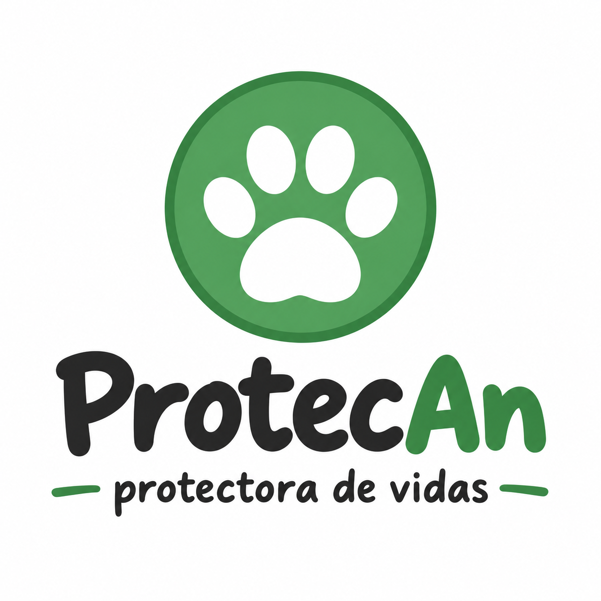

Dato curioso 1:
Esta aplicación nace de un proyecto de 2DMT.

ProtecAn es una aplicación de escritorio destinada a los administradores de protectoras de animales que busca facilitar el manejo y control de la misma protectora, haciendo que se pueda destinar una mayor cantidad de esfuerzo en los animales.
En este apartado observaremos el panel principal de la página, donde podremos ver información general de la aplicación.
Esta aplicación nace de un proyecto de 2DMT.
Nos diferenciamos al otorgar información para proteger a los animales ya adoptados.
Hay estudios que demuestran que hasta el 10% de animales adoptados son nuevamente abandonados.